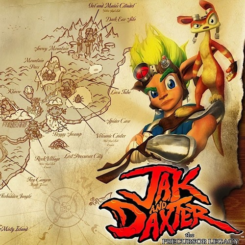
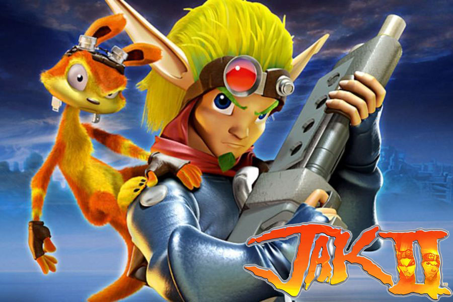
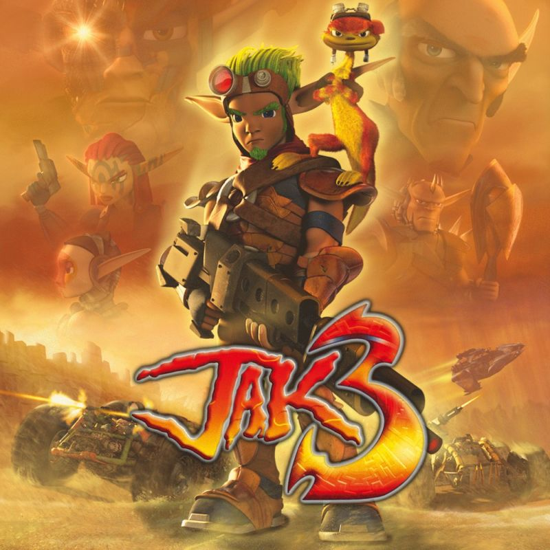
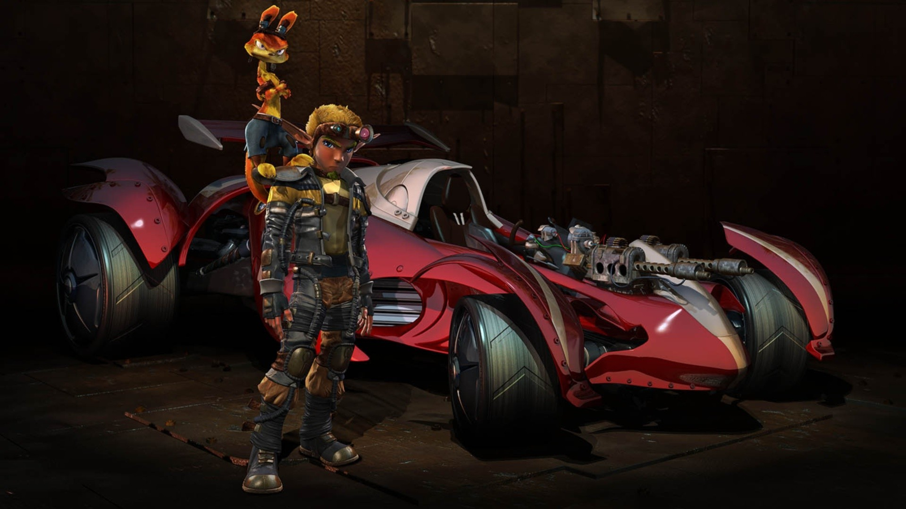

Jak and Daxter is a video game franchise created by Andy Gavin and Jason Rubin and owned by Sony Interactive Entertainment. The series was developed by Naughty Dog with a number of installments being outsourced to Ready at Dawn and High Impact Games.
Jak and Daxter games are a series of video games developed for Sony Computer Entertainment by Jason Rubin and Andy Gavin. The first game in the series was released on December 3rd, 2001 for the PlayStation 2.
The game follows the protagonist, a young boy named Jak, as he tries to help his friend Daxter after he is transformed into an ottsel, a fictional hybrid of an otter and a weasel. With the help of Samos the Sage, a master of the mysterious energy called 'Eco' created by an ancient race known as the Precursors, the pair learn that they must save their world from the rogue sages Gol and Maia Acheron, who plan to flood the world with "Dark Eco", a mysterious substance which corrupts all it touches. Against Samos's warnings, Jak and Daxter make their way to the forbidden Misty Island. There, they see two unknown figures ordering the Lurkers to gather eco and Precursor artifacts. The duo, worried by what they are seeing, prepare to leave, but are soon discovered by a Lurker guard. Jak manages to kill it with an explosive device they found, but the resulting explosion sends Daxter into a pool of dark eco. He emerges transformed into an ottsel (a fictional hybrid of an otter and a weasel), but is otherwise unharmed. Returning to their home of Sandover Village, they seek help from Samos. Samos explains that only Gol Acheron, the Dark Sage, can reverse the transformation.
The game takes place in the same fictional universe created by Naughty Dog for Jak and Daxter, though five hundred years after the events of the first game. The game largely revolves around Haven City, a dystopia ruled by Baron Praxis and his Krimzon Guard law enforcers. Sometime after the events of The Precursor Legacy, Jak, Daxter, and Samos the Green Sage are invited by Keira, Samos's daughter and Jak's romantic interest, to help her test the artifact recovered from the Acheron Citadel at the end of the last game: the Rift Rider, which utilizes the Rift Gate. When activated, the Rider opens a portal that reveals a strange creature, and they get sucked in. The group is separated and Jak and Daxter land in Haven City, a dystopia ruled by the tyrannical Baron Praxis. The Krimzon Guard, a paramilitary force led by Praxis's right-hand man Errol, arrest Jak and chase Daxter away. For the next two years, Jak is subjected to a series of experiments that involve infusing his body with Dark Eco in Praxis's attempt to create a mutant soldier.
The game begins with Jak and Daxter being banished into the Wasteland by the tyrannical Count Veger for supposed crimes against Haven City. Ashelin, who opposes the banishment, gives Jak a beacon before she leaves and tells him to "stay alive". As they travel through the desert, flashbacks reveal that Haven City is at war between the Freedom League and the surviving Metal Heads and their allies, the KG Death Bots. The Palace is then destroyed by an unknown force. As Jak, Daxter, and Pecker lose consciousness, they are rescued by a group of desert-dwellers, who take them back to Spargus City. Waking up in Spargus, the King, Damas, says that Jak must earn his place in the civilization by proving himself as a warrior in both the Arena challenges and by serving the city, who his "life now belongs to" for being rescued. His missions involve recovering citizens and artifacts during or after sandstorms, racing both buggies and Leaper lizards for upgrades, solving puzzles for Eco crystals, catching Kanga rats upon a Leaper lizard, and several other odd jobs in the oasis city.
Jak X: Combat Racing (known simply as Jak X in Europe, Africa and Australia) is a vehicular combat video game developed by Naughty Dog and published by Sony Computer Entertainment (SCE). First released for the PlayStation 2 console on October 18, 2005, it is the fourth installment in the Jak and Daxter series. The plot follows protagonist Jak and his allies who, after having been poisoned, must partake in a championship of the fictional sport of "combat racing" in an effort to obtain an antidote. A year after the Dark Maker ship has been destroyed, Haven City has been steadily rebuilt after Errol's defeat, and has grown into a peaceful utopia. Kras City, a dangerous dystopian city full of ruthless mobsters, is also home to a popular sport known as "Combat Racing". Jak, Daxter, Ashelin, Samos, Keira and Torn are invited to the reading of Krew's (one of the villains of Jak II) last will, where they meet Krew's daughter, Rayn. After offering a toast, Krew reveals in a recording that he always wanted to win the Combat Racing Championship and demands that everyone present drive for him, revealing that the wine they toasted with was poisoned with minute doses of a slow acting poison known as Black Shade. Krew gives them an ultimatum: win the next Kras City Championship as his team and receive the antidote when they win, or die. Divided into four cups, Jak and his friends must race and win each round of the race to gain entrance to the championship.